|
|
ОТКРЫТИЕ ЗИМНЕГО СЕЗОНА
|
|
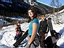 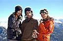 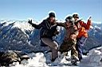 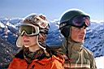 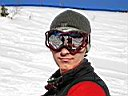 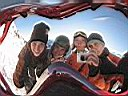 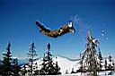 |
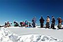 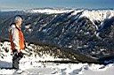 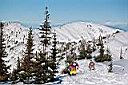 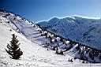 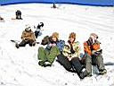 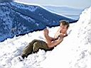 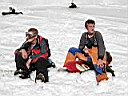 |
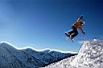 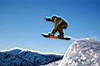 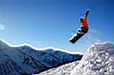 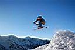 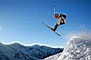 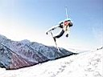 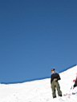 |
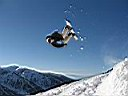 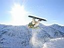 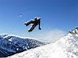 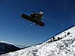 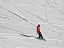 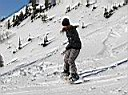 |
Ну вот собственно весь этот солнечный день и прокатались, и попрыгали, и побатонили... Фотографии тому подтверждение :) Хорошее начало сезона, но янь без инь не бывает. Артем Немо неудачно приземлился с трамплина и вывихнул плечо. Опытный товарищ привязал руку, друзья помогли спуститься по тропе, спасатели сделали укол и вправили сустав. Остаток вечера провели в зимухе "Наша Маша", отмечая глинтвейном начало сезона и все прочие события дня. Еще ходили в гости ко всем по немногу, ну надо же как-то потусить :) Интересно было у бурятского костра - эти люди богаты смешными историями и умело их рассказывают :)
Понедельник сегодня выходной день. Кому вчера не хватило - сегодня ищут целину и катаются. Кому хватило вчера - похмеляются и собираются в обратную дорогу. Пора домой, и так уже отдохнули хорошо, устали как собаки :) Теперь будем ждать Большого Снега, и приедем за ним на Мамай недели через две...
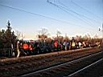 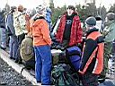 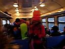
Ссылки в тему:
Отчет и фоты о событии от Байкальского Экстрима
Фотографии Кости Шишкина
Ноябрь 2007
Афтар коментов - Лёха Слюдянский
Фоты - Саша ака AlpineFox, Марина, Ульяна, Лёха